| 日付 | 2013年12月29日（日） - 2013年12月31日（火） |
|---|---|
| メンバー | 家族（妻、長女・2歳、長男・0歳） |
| アクセス | 車、船 |
3日目
6時半に起床。朝食前に外に出てみる。
少し高台に建つ旅館なのだが、残念ながら海からの日の出は見えなさそうだ。
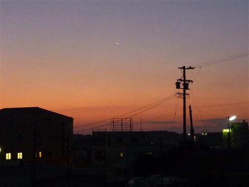
朝食は通常7時半のところを7時に変更してもらった。
古い建物だが部屋はきれいにしてあり、良い旅館だった。
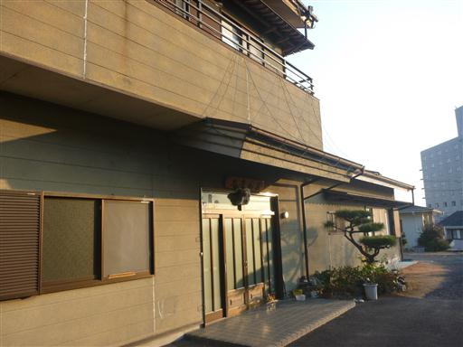
せっかく志摩まで南下したので、少しだけ志摩観光をすることにする。
目的地は横山展望台。英虞湾の展望が良いことで有名な展望台だ。
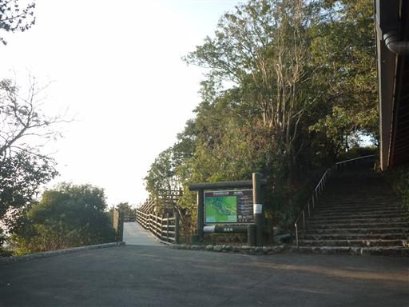
横山展望台は遊歩道が整備されている。
ぐるりと一周1時間程度の道を歩いてみることにする。
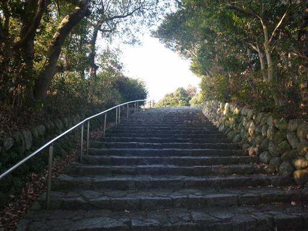
すぐに第一展望台に到着する。
目の前に英虞湾の見事なリアス式海岸が望める。
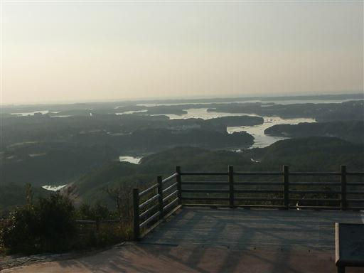
英虞湾の地形のレリーフが設置されている。非常に複雑な海岸線になっているのが分かる。
現在地である横山展望台は下辺の右側にある山だ。
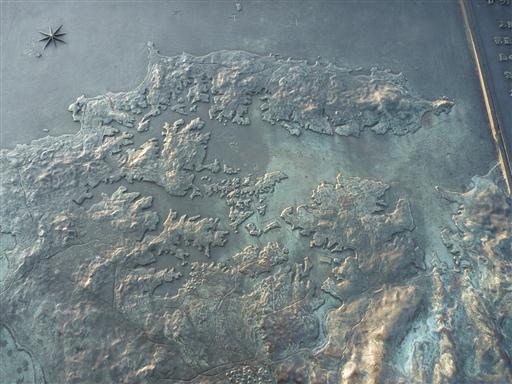
第一展望台には立派な見晴台が建てられている。
見晴台に登っても登らなくても、大して展望は変わらないが…
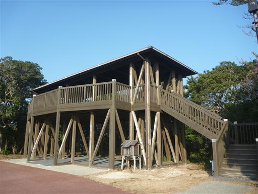
奥に見えるのは英虞湾を取り囲む先島半島、先端は御座岬だ。
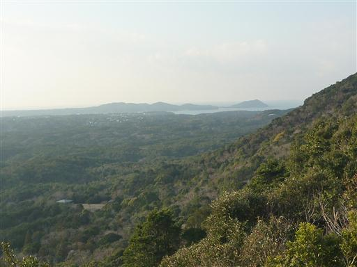
さらなる高台に向かって遊歩道を歩いていく。
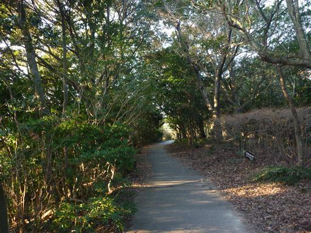
しばらく歩くとパノラマ展望台に到着する。

先ほどより少し高台から望む英虞湾。少し霞んでいるのが残念だ。
太陽がもっと上がれば、真っ青な海が見られるのだが…
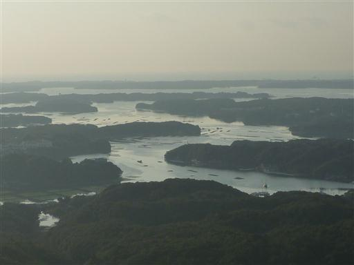
さらに登ると見晴展望台に到着する。ここまで来ると北側の展望も広がる。
遠くに見えているのは、こちらも複雑な海岸線を持つ的矢湾だ。
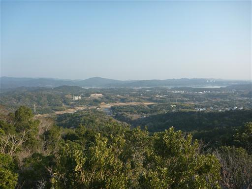
娘は少々ぐずりながらも自分の足で歩いている。
20分ほど足を延ばせば横山山頂まで行けるのだが、あまり時間がないためスキップする。
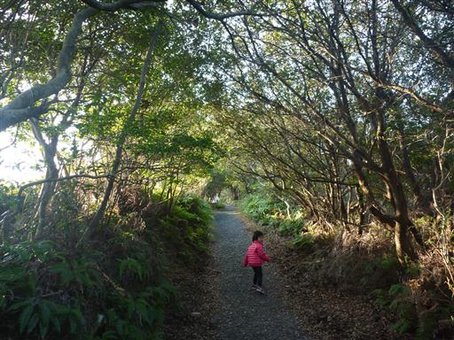
付近一帯はシダ植物が繁茂している。
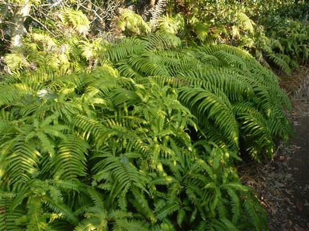
1時間ほどで遊歩道をぐるりと一周まわり第一展望台に戻ってくる。
駐車場からここまではスロープが設けられているので、帰りはこちらを歩く。
階段よりもこちらの方が展望が良い。
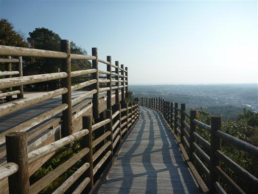
展望台を見学したら、昨日に引き続き伊勢に向かう。
今日は伊勢神宮の内宮を参拝する予定だ。
広い駐車場があるのだが、それでも大混雑で停めるまでにかなり待たされた。
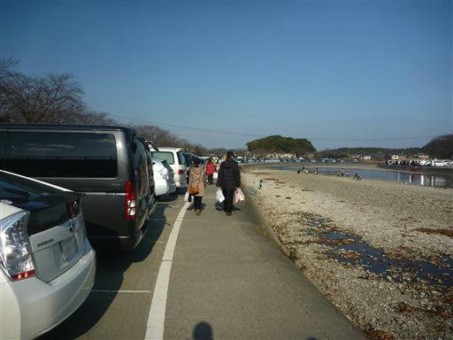
11時前なので、まずは昼食をとることにする。
訪れたのは「とうふや」。豆腐料理やあなご料理が食べられる店だ。
古民家風の建物でなかなか趣がある。
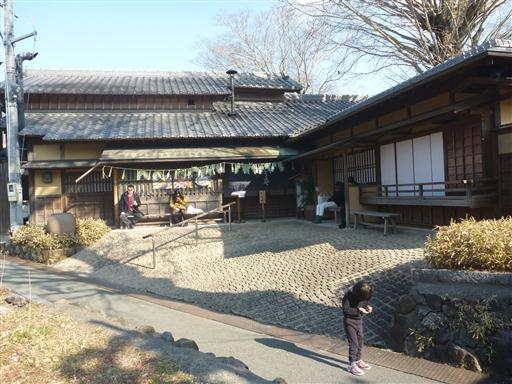
中は天井に太い木の梁が張り巡らされている。大きな建物で席数はかなりありそうだ。
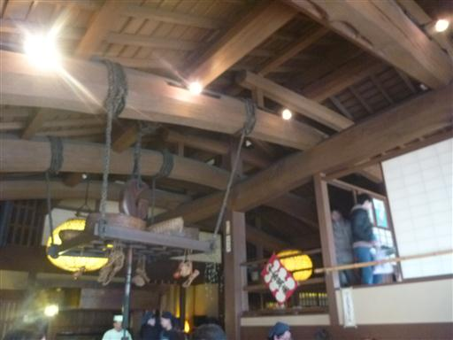
五十鈴川が眺められる座敷席に案内される。
雰囲気・料理ともに良い店だった。
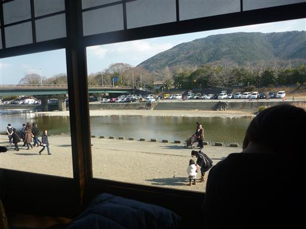
昼食をとったら五十鈴川沿いの道を歩いて伊勢神宮に向かう。
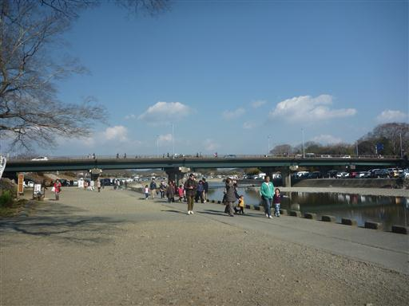
川沿いの道を外れて、おはらい町に入っていく。
まだ新年を迎えていないのに、思った以上に人通りが多く凄い活気だ。
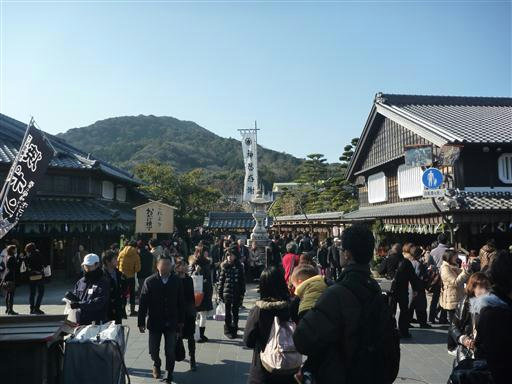
混雑する道を歩いていくと伊勢神宮内宮の大きな鳥居が現れる。
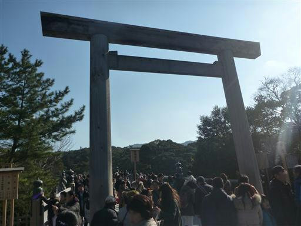
五十鈴川に架かる宇治橋を渡る。外宮は左側通行だったが内宮は右側通行だ。
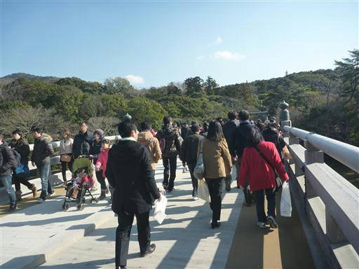
正宮に向かって歩いていく。
境内は広いため大混雑というほどではないが、それでも人は多い。
3年前の年末に川崎大師を訪れた際は閑散としていたが、それとはずいぶん異なる。
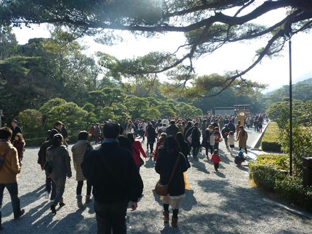
手水舎。ここで手を清める。
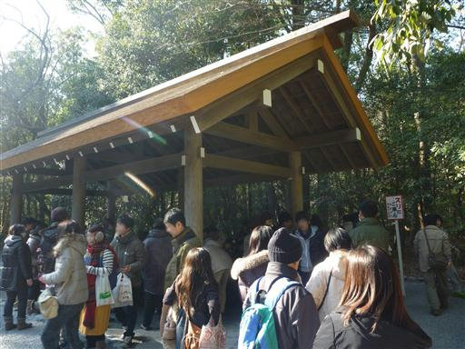
しばらく進むと御手洗場がある。
ここでは直接五十鈴川の水で手を清めることができる。
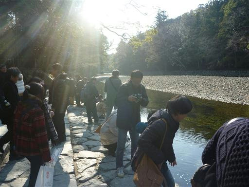
手を清めたら鳥居を潜ってさらに内部に入っていく。
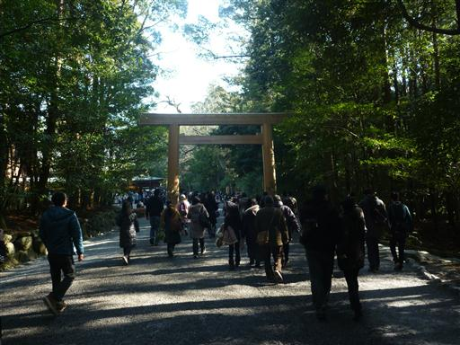
神楽殿。ここでは祈祷を受けることができる。
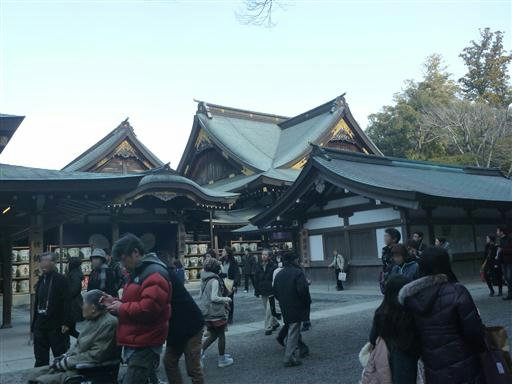
参道の周辺には見事な大木が建ち並んでいる。
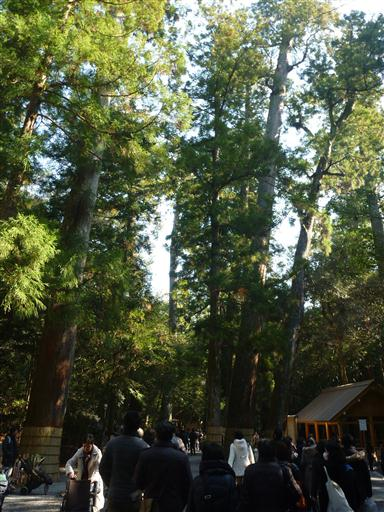
正宮に到着。かなりの列ができているが、横から入って参拝している人もいる。
警備の方に聞いてみたところ、「こだわりのある人」は列に並んでいるそうだ。
ご利益は同じということなので、こだわりのない我々は横から入って参拝を済ませる。
外宮と同様、内宮でも正宮は撮影禁止だ。
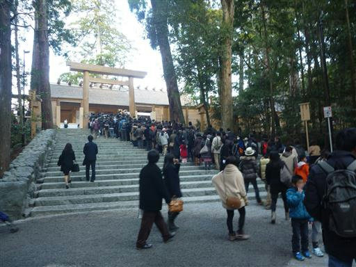
一際目を引く巨木。境内は杉の木が多いが、この木は杉ではなさそうだ。
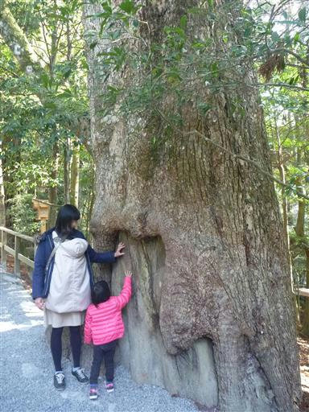
こちらは遷宮前の古い方の正宮。
門は封鎖されていて内部を窺い知ることはできない。
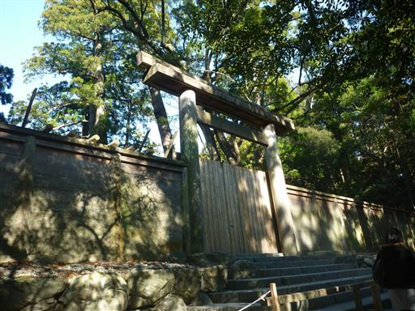
今は封鎖されているが、こちらにも参拝用の階段が設けられている。
また20年後に使用されるのだろう。
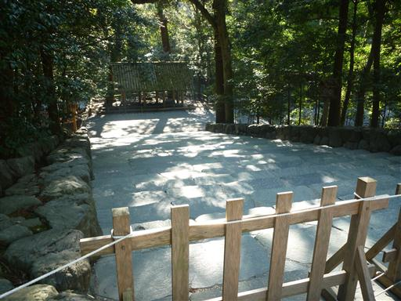
散水車が水をまいている。砂利道のため砂埃が多い。
明日はもっと酷くなりそうだ。
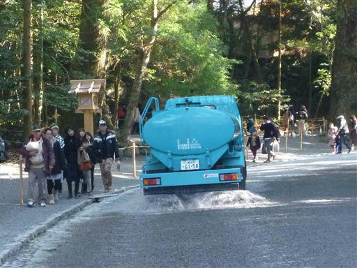
少し足を延ばして、別宮である風日祈宮を参拝する。
離れた場所にあるので、こちらに足を延ばす人は少ない。ほっと一息だ。

風日祈宮。こちらの建物は古いままだ。
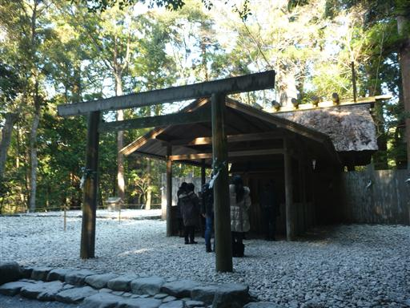
子安神社など、境内にある神社に一通り参拝を済ませて帰路に着く。
おはらい町の混雑を避けて、帰りは五十鈴川沿いの静かな道を歩いて駐車場に戻る。
これで今回の旅行はおしまい。奈良にある実家に向かう。
山に行かない旅行は久々だったが、それなりに楽しめた。
帰省ラッシュに巻き込まれることもないため、この手は今後も使えそうだ。
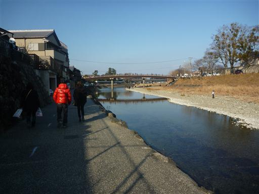